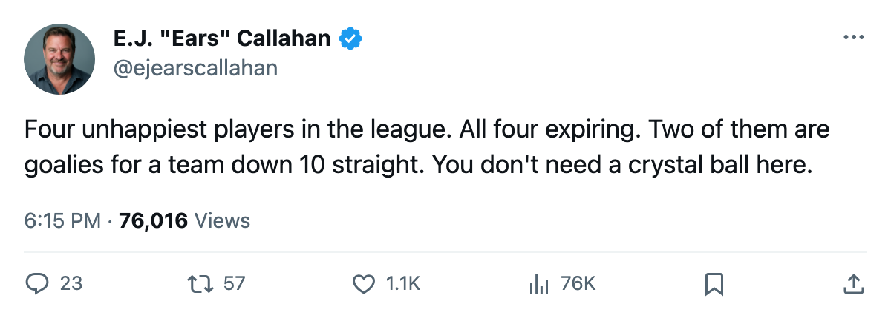
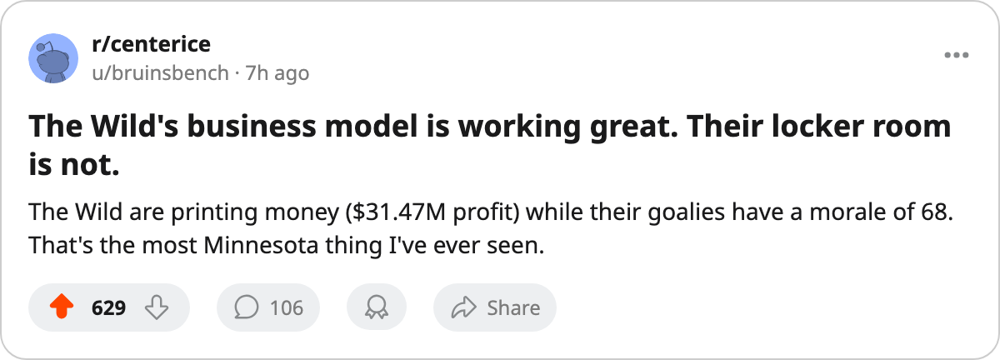

Sources: Morale Problems Brewing in Minnesota
The four unhappiest players in the league all have expiring contracts. Two of them are goalies for the worst team in the Northwest.
 E.J. "Ears" CallahanInsider · The Hot Stove
E.J. "Ears" CallahanInsider · The Hot Stove

Rumour

 Minnesota Wild is on a 10-game losing streak, dead last in the Northwest at 7-16-1 with 17 points, and their two goalies are the two lowest-morale players in the league.
Minnesota Wild is on a 10-game losing streak, dead last in the Northwest at 7-16-1 with 17 points, and their two goalies are the two lowest-morale players in the league.
 Dwayne Roloson86 and
Dwayne Roloson86 and  Manny Fernandez87 both sit at 68 on the Bureau's morale scale. That is the bottom of the chart. Both have 0 years left on their deals.
Manny Fernandez87 both sit at 68 on the Bureau's morale scale. That is the bottom of the chart. Both have 0 years left on their deals.
Fernandez has played 23 games, 57.5 minutes a night. He is the workhorse. Roloson has played 6, 40.0 minutes a night, mostly in relief or spot starts. Neither man looks like he wants to be in Minnesota past June.
The pattern holds at  Atlanta Thrashers, where the club average morale is 84.6, the lowest in the league.
Atlanta Thrashers, where the club average morale is 84.6, the lowest in the league.  Byron Dafoe76 sits at 70, with an expiring $2.40M and 21 games played.
Byron Dafoe76 sits at 70, with an expiring $2.40M and 21 games played.  Magnus Arvedson71 is also at 70, expiring at $2.49M, playing 10.3 minutes a night in a depth role. The Thrashers are 5-16-1, 13 points, the worst record in the league. Their two most unhappy guys are both about to hit the market.
Magnus Arvedson71 is also at 70, expiring at $2.49M, playing 10.3 minutes a night in a depth role. The Thrashers are 5-16-1, 13 points, the worst record in the league. Their two most unhappy guys are both about to hit the market.
Every single one of the four lowest-morale players in this league is expiring this summer. Four men, four phone calls, one summer.
The multi-year unhappiness problem
 Roman Turek80 at
Roman Turek80 at  Calgary Flames has 3 years left on $4.40M and a morale reading of 72. He has played 20 games at 55.0 minutes a night and the Flames are 9-14-1. Three years on $4.40M with a club that has nothing to play for. That kind of deal doesn't move for a second-rounder.
Calgary Flames has 3 years left on $4.40M and a morale reading of 72. He has played 20 games at 55.0 minutes a night and the Flames are 9-14-1. Three years on $4.40M with a club that has nothing to play for. That kind of deal doesn't move for a second-rounder.
 Travis Green73 is at 74 in Calgary, $2.97M with 3 years left, 17 games at 11.3 minutes. He is the Flames' second unhappy player on a multi-year deal. A man who would know put it plainly: the rebuilding clubs with the worst records also have the most unhappy rooms, and that is how you get a seller at the deadline who takes whatever you offer.
Travis Green73 is at 74 in Calgary, $2.97M with 3 years left, 17 games at 11.3 minutes. He is the Flames' second unhappy player on a multi-year deal. A man who would know put it plainly: the rebuilding clubs with the worst records also have the most unhappy rooms, and that is how you get a seller at the deadline who takes whatever you offer.
The Minnesota Wild payroll is $29.97M, the lowest in the league. Their profit is $31.47M, the highest. They are solvent and profitable and losing 10 straight. The front office has made its peace with the bottom, but watching their goaltenders count the days is harder to sit through.
🔥🔥

